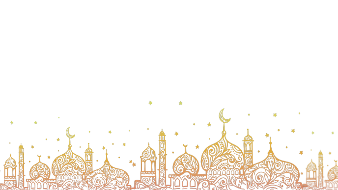

‚òòÔ∏èüí´Identitas Muslim
Home
Daftar Isi
Daftar Isi
Bab 1: Islam di Tengah Arus Liberalisasi
Bab 2: Gaya Hidup (Lifestyle) Muslim di Tengah Arus Hedonisme
Bab 3: Strategi Meneguhkan Identitas Muslim di Tengah Arus Global
